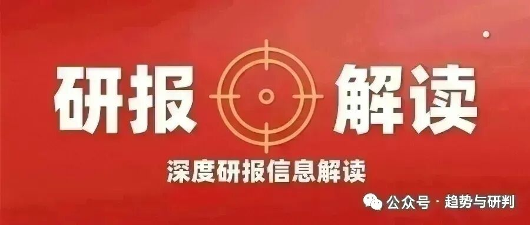
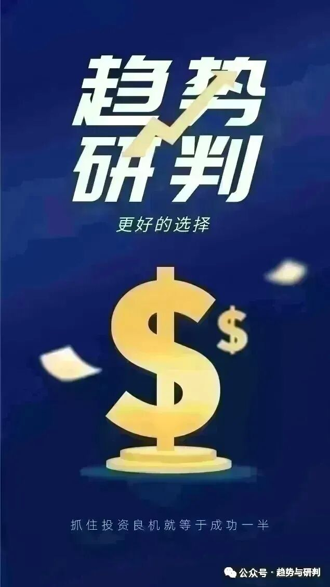

一个被市场忽视的AIDC核心环节正在进入紧缺周期
三星SDI向台湾新普科技供应AI数据中心电池电芯，高功率圆柱形电池订单激增。松下和三星SDI的BBU电芯供应已出现短缺。当市场目光多聚焦于AI服务器的GPU、光模块和电源时，一个关键的供应链薄弱环节正在浮出水面——BBU备用电池单元。
BBU是AI数据中心断电保护的最后一道防线。当市电中断、柴发尚未启动的几十秒窗口期，BBU中的圆柱电芯需要在瞬间释放巨大电流，保障整柜GPU和存储设备的安全断电。随着单机柜功耗从数十千瓦向兆瓦级迈进，BBU的功率等级和电芯用量呈指数级增长。GB300已将超级电容列为标配，BBU圆柱电芯有望紧随其后，成为AIDC的标准配置。当海外巨头产能出现短缺，蔚蓝锂芯——这个正在被海外云厂商纳入直供体系的国内圆柱电芯龙头——正站在从“代工配角”走向“直供主角”的关键转折点上。
我们从供给紧缺、利润弹性与成长空间三个维度，对蔚蓝锂芯的价值逻辑进行系统性拆解。
一、海外巨头产能不足，国产替代迫在眉睫
BBU圆柱电芯的供给格局高度集中。全球范围内，能够满足AI数据中心高功率、高可靠性要求的BBU电芯供应商以松下和三星SDI为主。然而，两大巨头的产能正在被快速增长的AI数据中心需求所吞噬。高功率圆柱形电池订单激增，供应短缺已成现实。
这种供给紧缺为国产替代提供了绝佳的导入窗口。BBU电芯的技术壁垒在于高倍率放电能力、长循环寿命和在极端工况下的安全可靠性。AI数据中心对电芯的要求远比消费电子和电动工具苛刻——一旦电芯在关键时刻失效，后果是整柜数据丢失和硬件损毁。因此，BBU电芯的客户验证周期漫长，但一旦通过验证，客户黏性极强，切换成本极高。
蔚蓝锂芯是海外云厂商补足供应链的优先选项。公司海外大客户审厂进展顺利，预计7至8月开启直供。这一时间节点的临近，意味着公司正从“代工供应商”向“直供核心供应商”实现质的跃迁。审厂通过是进入AI数据中心供应链的关键门槛，一旦跨过这道门槛，后续的订单放量和客户拓展将进入快车道。
二、从代工到直供，单颗盈利实现数倍跃升
蔚蓝锂芯在BBU电芯方向的盈利模式正在发生结构性升级。公司目前通过为moli代工的方式出货BBU电芯，盈利约2至3元/颗。代工模式的优点是稳定，但利润空间受限于品牌方的定价体系。一旦通过大客户审厂、开启直供模式，单颗盈利有望跃升至7元/颗——这是代工模式的两到三倍。
今年目标出货5000至6000万颗，预计到2028年代工加直供合计3亿颗。出货量的持续增长叠加直供占比的不断提升，BBU电芯业务的利润弹性将在未来三年内集中释放。
全极耳圆柱电芯是公司盈利能力的另一重保障。全极耳设计将传统的“单点极耳”改成整个端面集流，可实现极低内阻、更好散热、大倍率充放电和更长循环寿命。在无人机、BBU、电动工具、机器人、吸尘器等高端应用场景需求旺盛。公司目前已有全极耳产能1亿颗，还将投放1.8亿颗，单颗盈利可达4至5元。原料上涨和出口退税带来的成本压力已经向下游顺利传导，二季度单颗盈利有望继续提升至1元/颗。全极耳产品的放量将进一步拉升公司的整体盈利中枢。
三、从BBU到主业，双轮驱动的确定性增长
机构对蔚蓝锂芯的成长空间给出了清晰的测算框架。BBU业务方面，合计3亿颗出货量，其中代工约0.7亿颗、单颗盈利约2.5元，直供约2.3亿颗、单颗盈利约8元，合计利润约20亿元。加上主业利润，合计约33至35亿元。给予20倍估值，对应市值空间约700亿元以上。
这一估值框架的核心支撑来自三重驱动。出货量增长方面，从当前5000至6000万颗到2028年3亿颗，四年内出货量增长约五倍。单颗盈利跃升方面，从代工约2至3元/颗到直供约7元/颗，利润率实现质变。全极耳产品放量方面，1亿颗现有产能加上1.8亿颗新增产能，单颗盈利4至5元，为公司整体利润提供额外的增量弹性。
四、当BBU成为AIDC标配，蔚蓝锂芯的价值重估正在路上
蔚蓝锂芯的投资逻辑，本质上是对BBU圆柱电芯从“可选项”走向“标配”这一产业趋势的把握。当单机柜功耗迈向兆瓦级→断电保护成为刚需→BBU电芯供应出现短缺→海外大客户加速导入国产供应商→公司从代工走向直供→单颗盈利实现数倍跃升→业绩与估值同步兑现。这条传导链条中，BBU电芯的供给紧缺是国产替代的催化剂，海外大客户审厂是验证突破的里程碑，从代工到直供的单颗盈利跃升是利润弹性的核心来源。
在AI数据中心基础设施的庞大版图中，BBU圆柱电芯是一个尚未被充分定价的环节。蔚蓝锂芯，这个正在从代工配角走向直供主角的圆柱电芯龙头，或许正站在BBU标配化浪潮的起涨点上。
免责声明：本文内容基于公开信息及机构研报整理，仅供研究参考，不构成任何投资建议。市场有风险，投资需谨慎。
